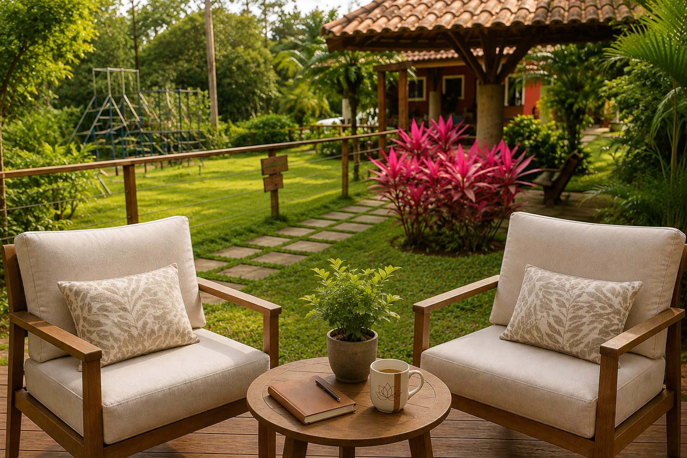
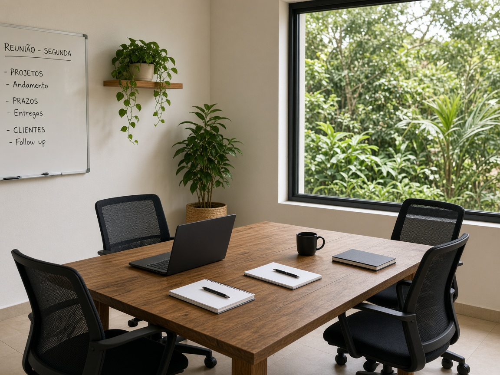

Diagnóstico sensível
Escuta com lideranças e, quando combinado, com a equipe para entender o clima, os excessos e o que o ambiente comunica.

Para organizações
Locais de trabalho pesados afetam produtividade e saúde mental. Cuidamos de pessoas, cultura e ambientes para devolver leveza ao que a empresa constrói todos os dias.
O problema
Insônia, mente acelerada, burnout e reuniões que pesam no corpo não são falhas individuais. São sinais de um sistema que precisa de escuta, ritmo e espaços mais humanos.
A mentoria integra saúde emocional, liderança consciente e, quando fizer sentido, harmonização de ambientes corporativos.

O que a mentoria cobre
Escuta com lideranças e, quando combinado, com a equipe para entender o clima, os excessos e o que o ambiente comunica.
Práticas e conversas que tiram o cuidado do discurso e colocam pausa, limite e presença na rotina de trabalho.
Acompanhamento para quem conduz pessoas: decidir com clareza sem abandonar a própria saúde.
Reorganização e limpeza energética de espaços corporativos, para reduzir a sobrecarga do lugar e devolver bem-estar.
Para quem
Percurso
No WhatsApp ou em uma chamada, entendemos o momento da empresa e o que precisa ser cuidado primeiro.
Desenhamos um percurso com encontros, práticas e, se necessário, harmonização do espaço físico.
O trabalho segue com presença: ajustes de ritmo, escuta da liderança e ambiente mais leve para produzir.
“A equipe chegou mais leve depois da harmonização. O ambiente parou de pesar na reunião.”
Ricardo P. · liderança comercial
Dúvidas
Para o seu time
Vamos conversar sobre o clima, as pessoas e o espaço. O próximo passo é uma mensagem.